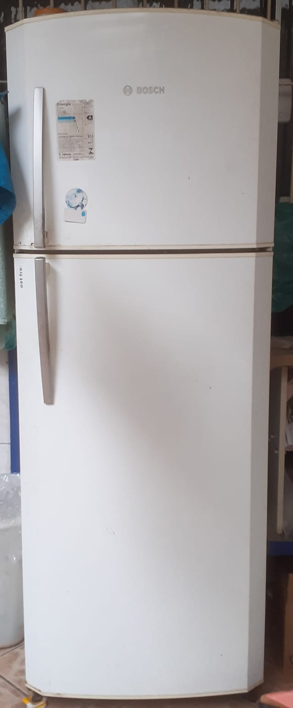

Veja alguns de nossos serviços
Confira exemplos de intervenções feitas pela CastroTEC e conheça nossa forma de trabalhar com equipamentos de refrigeração e lavagem.

Geladeira - Conserto do Sistema de Refrigeração
Cliente relatou que a geladeira estava gelando apenas na parte do freezer, enquanto a parte de baixo não refrigerava corretamente. Após análise, identificamos obstrução no sistema de circulação de ar e acúmulo excessivo de gelo no duto interno. Realizamos o descongelamento técnico, limpeza do sistema e ajustes no termostato. Equipamento voltou a funcionar normalmente.